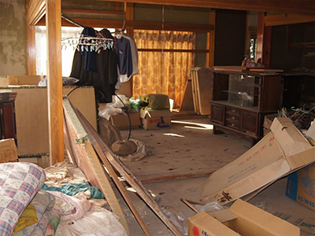
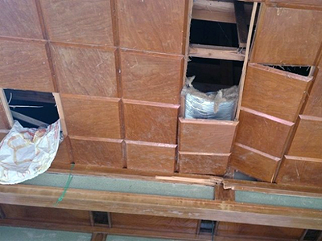

3.11を忘れない・・
みやぎ生協から被災地・宮城のいまをお伝えします
第22回 2015年6月5日
声なき在宅被災者の苦しみ


2014年秋に撮影した在宅被災者の住まい。寝る場所は確保できているが風呂や天井などは修理できていない。
(写真提供:東日本大震災一般社団法人チーム王冠 http://team-ohkan.net/)
床も天井もぼろぼろ、畳は腐り、壁の隙間から風が吹き込む―。4年を経たいまも、津波で壊れた家に我慢して住み続ける人たちがいます。｢在宅被災者｣と呼ばれていますが、復興庁発表の｢避難者｣にはカウントされず、生活実態もほとんど知られていません。
在宅被災者の支援団体｢チーム王冠｣の代表・伊藤健哉さんは、石巻エリアだけで約12,000世帯の在宅被災者がいると推定しています。
避難所に入れなかった、応急仮設住宅で体調を崩して自宅に戻ったなど在宅を選ばざるを得なかった理由は百人百様ですが、共通しているのは応急仮設住宅で避難生活をしている方に比べ、支援がきわめて薄いことです。
「お金はない。食料や生活物資の提供もない。家財道具は津波で持っていかれた。義援金が入るのは半年後。生活が苦しい上に、52万円の応急修理制度では水回りを直すだけで精いっぱいです」
チーム王冠が昨年石巻エリアで｢家屋修繕状況調査｣を実施したところ〝経済的理由で修理ができずにいる〟あるいは〝必要最低限の修理だけであきらめている〟現状が明らかになりました。自治体等の支援制度を合わせれば約250万円（※）まで利用できるのですが、大規模半壊や全壊の家を修繕するには約1,000万円必要と言われており、経済的に余裕のない世帯や年金生活の高齢者にとっては到底無理な話でした。
2014年、災害対策基本法が改正され、在宅被災者支援が盛り込まれました。しかしそれは今後の災害に向けてのもの。「東日本大震災の在宅被災者は、町内会も無くなり、高齢化も進んで心身の不安も抱えているのに、いまだに放置されたままなんです」。
伊藤さんは｢このままだと東日本大震災の在宅被災者は無かったことにされてしまうのではないか｣と不安を抱いています。
｢在宅被災者の問題を何とかしないといけないという声が全国からあがれば、国も動かざるを得ません」。そのためにも壊れた家に住み続けている人たちがいることを忘れないでほしい。その生活の大変さを理解してほしい、そう伊藤さんは訴えます。
※被災者支援法による加算支援金、住宅再建支援事業など（自治体によって違いあり）。
（情報提供／みやぎ生協）
 前の記事 第21回「苦しみの声をあげない生活困窮者」（2015年5月7日掲載）
前の記事 第21回「苦しみの声をあげない生活困窮者」（2015年5月7日掲載）